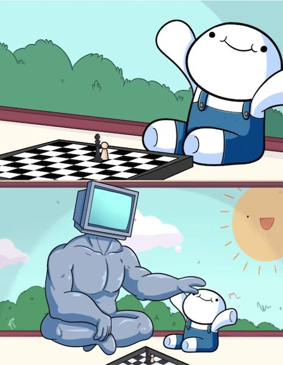

Enseignements (archives)
"La différence entre un maître et un apprenti est que le maître a échoué plus de fois que l'apprenti n'a essayé." (Assassination Classroom, Yūsei Matsui)

2023-2024 (UPJV)
Algèbre linéaire avancée (L3 Mathématiques)CM : Ivan Marin
TD1 - ModulesTD2 - DualitéTD3 - Algèbre multilinéaireTD Hors série - Espaces quotientsTD4 - Modules sur un anneau principal
Contrôles :
Analyse complexe (L3 Mathématiques)CM : Jacques Darné
Préparation à l'agrégation externe (M2 Mathématiques)
TD - Rappels et exercices sur les espaces euclidiens et hermitiens (correction )TD - Rappels et exercices sur le groupe linéaire I (correction )TD - Rappels et exercices sur le groupe linéaire II (correction )
2022-2023 (UPJV)
Algorithmique algébrique (L3 Mathématiques) CM : Élise Janvresse
Algèbre linéaire avancée (L3 Mathématiques)CM : Ramla Abdellatif
TD1 - Modules sur un anneau commutatif: quelques généralitésTD1bis - Modules, le retourTD2 - Produit tensoriel d'espaces vectoriels et de modulesTD3 - Modules sur les anneaux principauxTD4 - Formes linéaires, hyperplans et (bi)dualité (correction )
Contrôles :
Préparation à l'agrégation externe (M2 Mathématiques)
TD - Rappels et exercices sur les espaces euclidiens et hermitiens (correction )TD - Rappels et exercices sur le groupe linéaire I (correction )TD - Rappels et exercices sur le groupe linéaire II (correction )
2021-2022 (UPJV)
Méthodes et techniques de calcul (L1 Sciences)CM : Louis Pernas
Nombres complexes et géométrie (L3 Mathématiques)CM : David Chataur
TD1 - Séries entières, exponentielle, équations de droite et cercles et théorème de Napoléon (correction ) TD2 - Retour sur l'exponentielle complexe, construction du nombre pi et cercle unité (correction )
TD3 - Similitudes et exercices géométriques classiques (correction )
TD4 - Actions de groupes, espaces projectifs (correction )
TD5 - Algèbre des quaternions, applications géométriques (correction )
TD6 - Birapport, inversions, homographies (correction )
TD7 - Exercices supplémentaires (correction )
Contrôles :
Algèbre linéaire avancée (L3 Mathématiques)CM : David Chataur